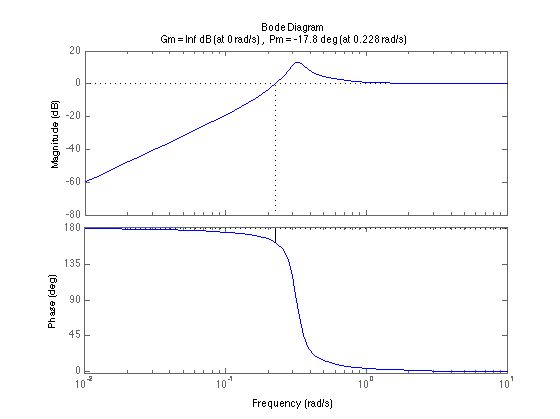

Homework 8
Contents
Problem 6.3(c)
num = [1]; den = conv([1 1 0], [0.02 1]); L = tf(num, den); % Open Loop Bode figure; bode(L); title('Problem 6.3(c)'); grid on; % Closed Loop Bode - Phase and Gain Margins figure; margin(L/(1+L)); grid on;
Answer
The system is stable becuase of the gain margin being positive.
Problem 6.3(d)
num = [1]; den = conv([1 2 1], [1 2 4]); L = tf(num, den); % Open Loop Bode figure; bode(L); title('Problem 6.3(d)'); grid on; % Closed Loop Bode figure; margin(L/(1+L)); grid on;
Answer
The system is stable becuase of the gain margin is 21 dB.
Problem 6.3(e)
num = [10 40]; den = conv([1 1 0], [1 2 5]); L = tf(num, den); % Open Loop Bode figure; bode(L); title('Problem 6.3(e)'); grid on; % Closed Loop Bode figure; margin(L/(1+L)); grid on;
Answer
The system is unstable, we can determine this from phase margin.
Problem 6.3(h)
num = [4 40 0]; den = conv([1 100], [4 5 4]); L = tf(num, den); % Open Loop Bode figure; bode(L); title('Problem 6.3(f)'); grid on; % Closed Loop Bode figure; margin(L/(1+L)); grid on;
Answer
The system is stable becuase all of the poles of the closed loop system are in the OLHP.
Problem 6.17(b)
num = [1 1]; den = [3 10 0 0]; KG = tf(num, den); figure; margin(1/(1+KG)); figure; rlocus(KG);
Answer
We can slide the bode plot up infinitely since we have infinite gain margin, the root locus also shows that positive gain is the only option.
Problem 6.19(b)(d)
num = [1]; den = [1 14 44 40]; G = tf(num,den); figure; nyquist(G); figure; margin(G); figure; rlocus(G);